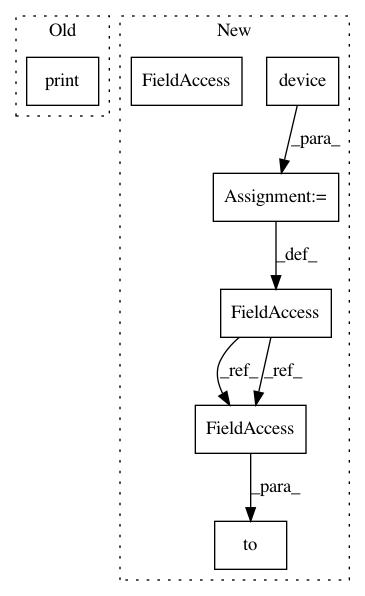

0a8e27413d721bf8d753e5e6061cc24f5bf6474f,train.py,,,#,917
Before Change
// Model
model = build_model()
print(model)
if use_cuda:
model = model.cuda()
receptive_field = model.receptive_field
After Change
// Dataloader setup
data_loaders = get_data_loaders(data_root, speaker_id, test_shuffle=True)
device = torch.device("cuda" if use_cuda else "cpu")
// Model
model = build_model().to(device)
receptive_field = model.receptive_field
print("Receptive field (samples / ms): {} / {}".format(
receptive_field, receptive_field / fs * 1000))
In pattern: SUPERPATTERN
Frequency: 3
Non-data size: 7
Instances
Project Name: r9y9/wavenet_vocoder
Commit Name: 0a8e27413d721bf8d753e5e6061cc24f5bf6474f
Time: 2018-05-04
Author: zryuichi@gmail.com
File Name: train.py
Class Name:
Method Name:
Project Name: rusty1s/pytorch_geometric
Commit Name: 04ad358395c7bd074ffb9af235ccb76d2c0dc4cc
Time: 2020-07-01
Author: matthias.fey@tu-dortmund.de
File Name: examples/pna.py
Class Name:
Method Name:
Project Name: rusty1s/pytorch_geometric
Commit Name: 631d4ee2ece28da70d6e22201129f39b4f1dc586
Time: 2020-10-26
Author: matthias.fey@tu-dortmund.de
File Name: examples/tgn.py
Class Name:
Method Name: